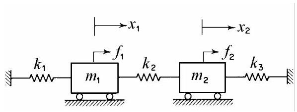

4.1.3 自然模态的正交性(Orthogonality of Natural Modes)
将解(4.13)代入方程(4.3)，我们得到
\[
\left\lbrack k\right\rbrack \{ u{\} }_{1} = {\omega }_{1}^{2}\left\lbrack m\right\rbrack \{ u{\} }_{1}, \tag{4.15, a}
\]
\[
\left\lbrack k\right\rbrack \{ u{\} }_{2} = {\omega }_{2}^{2}\left\lbrack m\right\rbrack \{ u{\} }_{2}. \tag{4.15, b}
\]
将(4.15, a)左乘\(\{ u{\} }_{2}^{\mathrm{T}}\)得到
\[
\{ u{\} }_{2}^{\mathrm{T}}\left\lbrack k\right\rbrack \{ u{\} }_{1} = {\omega }_{1}^{2}\{ u{\} }_{2}^{\mathrm{T}}\left\lbrack m\right\rbrack \{ u{\} }_{1}. \tag{4.16}
\]
对(4.15, b)取转置并在右侧乘以\(\{ u{\} }_{1}\)，我们得到
\[
\{ u{\} }_{2}^{\mathrm{T}}\left\lbrack k\right\rbrack \{ u{\} }_{1} = {\omega }_{2}^{2}\{ u{\} }_{2}^{\mathrm{T}}\left\lbrack m\right\rbrack \{ u{\} }_{1}. \tag{4.17}
\]
将(4.16)与(4.17)相减，对于\({\omega }_{1} \neq {\omega }_{2}\)，我们得到
\[
\{ u{\} }_{2}^{\mathrm{T}}\left\lbrack m\right\rbrack \{ u{\} }_{1} = 0, \tag{4.18}
\]
并取其转置
\[
\{ u{\} }_{1}^{\mathrm{T}}\left\lbrack m\right\rbrack \{ u{\} }_{2} = 0 \tag{4.19}
\]
将(4.18)代入(4.16)可得
\[
\{ u{\} }_{2}^{\mathrm{T}}\left\lbrack k\right\rbrack \{ u{\} }_{1} = 0 \tag{4.20}
\]
并取其转置
\[
\{ u{\} }_{1}^{\mathrm{T}}\left\lbrack k\right\rbrack \{ u{\} }_{2} = 0 \tag{4.21}
\]
方程(4.18)-(4.21)表明，模态向量(modal vectors)关于质量矩阵(mass matrix)和刚度矩阵(stiffness matrix)是正交的。注意这与两个向量\(\{ a\}\)和\(\{ b\}\)的普通正交性不同，后者记为\(\{ a{\} }^{\mathrm{T}}\{ b\} = 0\)。
4.1.4 模态坐标(Modal Coordinates)
在(4.13)中记作
\[
{q}_{1}\left( t\right) = {C}_{1}\cos \left( {{\omega }_{1}t - {\varphi }_{1}}\right) ,
\]
\[
{q}_{2}\left( t\right) = {C}_{2}\cos \left( {{\omega }_{2}t - {\varphi }_{2}}\right) \tag{4.22}
\]
使得(4.14)变为
\[
\{ x\left( t\right) \} = \{ u{\} }_{1}{q}_{1} + \{ u{\} }_{2}{q}_{2}. \tag{4.23}
\]
方程(4.23)可写成
\[
\{ x\left( t\right) \} = \left\lbrack {\{ u{\} }_{1}\{ u{\} }_{2}}\right\rbrack \left\{ \begin{array}{l} {q}_{1} \\ {q}_{2} \end{array}\right\} = \left\lbrack u\right\rbrack \{ q\} \tag{4.23, a}
\]
其中
\[
\left\lbrack u\right\rbrack = \left\lbrack {\{ u{\} }_{1}\{ u{\} }_{2}}\right\rbrack \tag{4.24}
\]
称为模态矩阵(modal matrix)。
将(4.23)代入(4.3)，左乘\(\{ u{\} }_{r}^{\mathrm{T}}\left( {r = 1,2}\right)\)并利用正交性，我们得到
\[
{M}_{r}{\ddot{q}}_{r} + {K}_{r}{q}_{r} = 0, \tag{4.25}
\]
其中
\[
{M}_{r} = \{ u{\} }_{r}^{\mathrm{T}}\left\lbrack m\right\rbrack \{ u{\} }_{r},{K}_{r} = \{ u{\} }_{r}^{\mathrm{T}}\left\lbrack k\right\rbrack \{ u{\} }_{r} \tag{4.26}
\]
分别为模态质量(modal masses)和模态刚度(modal stiffnesses)。
模态质量和模态刚度的取值取决于模态向量的归一化方式。当给定模态质量时，称这些向量为质量归一化(mass-normalized)。若模态质量取单位值，则模态刚度等于相应固有频率的平方。
由方程(4.15)可得用模态向量表示的固有频率
\[
{\omega }_{r}^{2} = \frac{\{ u{\} }_{r}^{\mathrm{T}}\left\lbrack k\right\rbrack \{ u{\} }_{r}}{\{ u{\} }_{r}^{\mathrm{T}}\left\lbrack m\right\rbrack \{ u{\} }_{r}}.\;r = 1,2 \tag{4.27}
\]
瑞利商(Rayleigh's quotient)定义为
\[
R\left( {\{ u\} }\right) = \frac{\{ u{\} }^{\mathrm{T}}\left\lbrack k\right\rbrack \{ u\} }{\{ u{\} }^{\mathrm{T}}\left\lbrack m\right\rbrack \{ u\} }. \tag{4.28}
\]
若向量\(\{ u\}\)与系统的某一模态向量重合，则该商等于相应固有频率的平方。瑞利商在模态向量附近具有驻值。若\(\{ u\}\)为与第一阶模态向量略有差异的试探向量，则\(R\left( \{ \right) u\}\))非常接近基频的平方，且总是略高。
线性变换(4.23)使运动方程解耦。使运动方程相互独立的坐标(4.22)称为主坐标(principal coordinates)或模态坐标(modal coordinates)。
将(4.23, a)代入(4.3)并左乘\({\left\lbrack u\right\rbrack }^{\mathrm{T}}\)得
\[
{\left\lbrack u\right\rbrack }^{\mathrm{T}}\left\lbrack m\right\rbrack \left\lbrack u\right\rbrack \{ \ddot{q}\} + {\left\lbrack u\right\rbrack }^{\mathrm{T}}\left\lbrack k\right\rbrack \left\lbrack u\right\rbrack \{ q\} = \{ 0\} , \tag{4.29}
\]
或
\[
\left\lbrack M\right\rbrack \{ \ddot{q}\} + \left\lbrack K\right\rbrack \{ q\} = \{ 0\} , \tag{4.29, a}
\]
其中对角矩阵
\[
\left\lbrack M\right\rbrack = {\left\lbrack u\right\rbrack }^{\mathrm{T}}\left\lbrack m\right\rbrack \left\lbrack u\right\rbrack \text{ and }\left\lbrack K\right\rbrack = {\left\lbrack u\right\rbrack }^{\mathrm{T}}\left\lbrack k\right\rbrack \left\lbrack u\right\rbrack \tag{4.30}
\]
分别为模态质量矩阵(modal mass matrix)和模态刚度矩阵(modal stiffness matrix)。
坐标变换(4.23, a)同时对质量矩阵和刚度矩阵进行对角化。在分别求解解耦方程(4.29, a)后，可将模态坐标代回(4.23, a)以获得构形空间中的物理坐标。该技术称为模态分析(modal analysis)。模态分析利用基于模态矩阵(modal matrix)的线性坐标变换，将振动系统的运动方程解耦。
4.1.5 对谐波激励的响应
考虑图4.4所示系统在分别作用于质量\({m}_{1}\)的力\({f}_{1}\left( t\right)\)和\({f}_{2}\left( t\right)\)作用下的受迫振动。

图4.4
运动方程为
\[
{m}_{1}{\ddot{x}}_{1} + \left( {{k}_{1} + {k}_{2}}\right) {x}_{1} - {k}_{2}{x}_{2} = {f}_{1},
\]
\[
{m}_{2}{\ddot{x}}_{2} - {k}_{2}{x}_{1} + \left( {{k}_{3} + {k}_{2}}\right) {x}_{2} = {f}_{2}, \tag{4.31}
\]
或以紧凑的矩阵形式表示为
\[
\left\lbrack m\right\rbrack \{ \ddot{x}\} + \left\lbrack k\right\rbrack \{ x\} = \{ f\} , \tag{4.31, a}
\]
其中\(\{ f\}\)为外施力列向量。
个人理解
这部分内容是结构动力学中非常核心且非常优美的概念：模态分析 (Modal Analysis)。如果你觉得公式推导很抽象，完全正常。我们可以用一个更直观、更生活化的方式来理解它。想象一下，我们不再看这些矩阵和向量，而是把它想象成一个乐队。
1. 核心问题：混乱的合奏 (The Problem: Coupled Equations)
一个复杂的结构（比如一座桥、一栋楼）在振动时，内部有成千上万个点。每个点的运动都会影响到它周围的点。
- 物理坐标 \(\{x(t)\}\)：这就像是乐队里每个乐手的独立动作。比如，小提琴手在拉弓，鼓手在敲鼓，贝斯手在拨弦。
- 耦合的运动方程 \([m]\{\ddot{x}\} + [k]\{x\} = \{0\}\)：这代表了乐队的现状——一片混乱。每个乐手都在凭感觉演奏，他们的声音和节奏相互干扰，听起来非常嘈杂。你无法单独分析小提琴的声音，因为它完全混在了鼓声和贝斯声里。这就是“耦合”（Coupled）的含义：所有自由度的运动都搅在一起，无法分开处理。
我们的目标是：把这团混乱的声音分离开，让它变得清晰有序。
2. 解决方案第一步：找到“和弦” (Natural Modes / 振型)
乐队指挥发现，虽然乐手们在乱弹，但如果他们按照某些特定的节奏和模式一起演奏，声音会变得异常和谐、响亮。这些特定的、和谐的演奏模式，就是系统的自然模态 (Natural Modes)。
- 模态向量 (Modal Vector) \(\{u\}_r\)：这就是一个“和弦”的指法或乐谱。它规定了在第 \(r\) 个和谐模式下，每个乐手（每个点）应该如何运动。比如，在第一种模式（基频）下，小提琴手动作幅度是1，鼓手是0.8，贝斯手是1.2，他们都以相同的节奏（频率 \(\omega_1\)）运动。这个
[1, 0.8, 1.2] 的相对幅度关系就是模态向量 \(\{u\}_1\)。
- 固有频率 (Natural Frequency) \(\omega_r\)：这是那个“和弦”听起来的音高。每个模态（和谐模式）都有一个自己固定的频率。
3. 解决方案第二步：神奇的“正交性”规则 (Orthogonality)
“正交性”是模态分析中最神奇的数学工具。它告诉我们一个惊人的事实：
任何两种不同的和谐模式（模态）之间，是完全“独立”或“不相关”的。
书中的公式：
\[
\{u\}_2^T [m] \{u\}_1 = 0
$$
$$
\{u\}_2^T [k] \{u\}_1 = 0
\]
- 直观理解：这不像普通的几何垂直（\(\{a\}^T\{b\}=0\)）。你可以把它理解为一种能量上的独立。当系统按照第1模态振动时，它产生的动能和势能，在第2模态的“视角”下看来，总和为零。反之亦然。
- 乐队比喻：这就像乐队的第一种“和弦”（比如C大调和弦）和第二种“和弦”（比如G大调和弦）是完全不同的。你不可能把C大调和弦的能量错误地算到G大调和弦上去。它们在音乐上是“正交”的。
这个规则是进行下一步“解耦”的数学钥匙。
4. 解决方案第三步：用“和弦”来谱写“乐曲” (Modal Coordinates / 模态坐标)
现在我们知道系统有好几种和谐的振动模式（模态/和弦）。那么，系统任意时刻的复杂、混乱的振动，其实能不能看作是这几种和谐模式（和弦）的叠加呢？答案是肯定的！
- 物理坐标 \(\{x(t)\}\)：这是我们听到的最终的、复杂的乐曲。
- 模态向量 \(\{u\}_r\)：这是我们拥有的基础和弦（C大调，G大调等）。
- 模态坐标 (Modal Coordinate) \(q_r(t)\)：这才是最关键的概念！它代表在最终的乐曲中，每一种“和弦”在 \(t\) 时刻贡献了多大的“音量”。
书中的核心公式：
\[
\{x(t)\} = \{u\}_1 q_1(t) + \{u\}_2 q_2(t) + \dots
\]
这就像在说：
最终乐曲 = (C和弦的指法) × (C和弦的音量随时间变化) + (G和弦的指法) × (G和弦的音量随时间变化) + ...
我们成功地把一个复杂的运动 \(\{x(t)\}\)，分解成了几个简单模式的组合。我们不再直接分析每个乐手的复杂动作 \(\{x(t)\}\)，而是转而去分析每种“和弦”的音量变化 \(q(t)\)。
5. 最终结果：解耦与模态分析 (Decoupling & Modal Analysis)
当我们把这个“坐标变换”代入原始的、混乱的运动方程，并利用前面提到的“正交性”这个神奇规则，奇迹发生了：
原来耦合在一起的方程组，瞬间被拆散成了一系列独立的、简单的方程：
\[
M_r \ddot{q}_r + K_r q_r = 0 \quad (r=1, 2, \dots)
\]
- 发生了什么？ 我们成功地将一个“多自由度耦合系统”（一个混乱的乐队）分解成了多个单自由度系统（多个可以独立分析的音轨）。
- \(M_r\) (模态质量) 和 \(K_r\) (模态刚度)：它们分别是第 \(r\) 个“音轨”的等效质量和等效刚度。
- 模态分析 (Modal Analysis)：整个过程——从找到系统的和谐模式（模态），到利用这些模式作为新的“坐标系”来解耦运动方程——就叫做模态分析。
总结与类比
| 专业术语 |
乐队类比 |
一句话解释 |
| 物理坐标 \(\{x\}\) |
每个乐手的具体动作 |
描述系统每个点的实际位移，非常复杂。 |
| 耦合的运动方程 |
整个乐队的混乱合奏 |
所有点的运动都相互关联，无法分开求解。 |
| 模态/振型 \(\{u\}_r\) |
一种和谐的“和弦”或“乐谱” |
系统固有的、和谐的振动形态。 |
| 固有频率 \(\omega_r\) |
“和弦”的音高 |
该振动形态对应的特定频率。 |
| 正交性 |
不同“和弦”在能量上相互独立 |
保证了不同模态之间不会互相“串扰”的数学规则。 |
| 模态坐标 \(q_r(t)\) |
每种“和弦”随时间变化的“音量” |
描述了每个模态在总运动中所占的权重。 |
| 解耦 (Decoupling) |
将混乱的合奏分解成独立的音轨 |
将复杂的耦合方程组变成多个简单的独立方程。 |
| 模态分析 |
整个音乐分析过程 |
核心思想： 任何复杂的振动，都可以看作是系统自身几种基本振动模式的线性叠加。 |
所以，理解模态分析的关键就是：换一个“视角”看问题。不要死盯着每个点的具体运动（物理坐标），而是从系统整体的、固有的振动模式（模态坐标）出发，问题就会迎刃而解。
4.1.5.1 模态分析法求解
将(4.23, a)代入方程(4.31, a)，并在左侧乘以\({\left\lbrack u\right\rbrack }^{\mathrm{T}}\)，得到
\[
\left\lbrack M\right\rbrack \{ \ddot{q}\} + \left\lbrack K\right\rbrack \{ q\} = \{ F\} , \tag{4.32}
\]
其中
\[
\{ F\} = {\left\lbrack u\right\rbrack }^{\mathrm{T}}\{ f\} \tag{4.33}
\]
为模态力列向量。
对于谐波激励
\[
\{ f\} = \left\{ \widehat{f}\right\} \cos {\omega t} \tag{4.34}
\]
稳态响应为
\[
\{ x\} = \{ \widehat{x}\} \cos {\omega t},\;\{ q\} = \{ \widehat{q}\} \cos {\omega t}, \tag{4.35}
\]
其中字母上的尖帽表示幅值。
将(4.34)和(4.35)代入(4.32)，得到
\[
\left\lbrack {-{\omega }^{2}\left\lbrack M\right\rbrack + \left\lbrack K\right\rbrack }\right\rbrack \{ \widehat{q}\} = {\left\lbrack u\right\rbrack }^{\mathrm{T}}\{ \widehat{f}\} = \{ \widehat{F}\} , \tag{4.36}
\]
so that the amplitudes of modal coordinates are
于是模态坐标的幅值为
\[
{\widehat{q}}_{1} = \frac{{\widehat{F}}_{1}}{{K}_{1} - {\omega }^{2}{M}_{1}} = \frac{\{ u{\} }_{1}^{\mathrm{T}}\{ \widehat{f}\} }{\{ u{\} }_{1}^{\mathrm{T}}\left\lbrack k\right\rbrack \{ u{\} }_{1} - {\omega }^{2}\{ u{\} }_{1}^{\mathrm{T}}\left\lbrack m\right\rbrack \{ u{\} }_{1}}, \tag{4.37}
\]
\[
{\widehat{q}}_{2} = \frac{{\widehat{F}}_{2}}{{K}_{2} - {\omega }^{2}{M}_{2}} = \frac{\{ u{\} }_{2}^{\mathrm{T}}\{ \widehat{f}\} }{\{ u{\} }_{2}^{\mathrm{T}}\left\lbrack k\right\rbrack \{ u{\} }_{2} - {\omega }^{2}\{ u{\} }_{2}^{\mathrm{T}}\left\lbrack m\right\rbrack \{ u{\} }_{2}}. \tag{4.38}
\]
振幅的方程(4.23)变为
\[
\{ \widehat{x}\} = \{ u{\} }_{1}{\widehat{q}}_{1} + \{ u{\} }_{2}{\widehat{q}}_{2}. \tag{4.39}
\]
将(4.37)和(4.38)代入(4.39)，我们得到物理坐标下的振幅向量
\[
\{ \widehat{x}\} = \frac{\{ u{\} }_{1}^{\mathrm{T}}\{ \widehat{f}\} \{ u{\} }_{1}}{\{ u{\} }_{1}^{\mathrm{T}}\left\lbrack k\right\rbrack \{ u{\} }_{1} - {\omega }^{2}\{ u{\} }_{1}^{\mathrm{T}}\left\lbrack m\right\rbrack \{ u{\} }_{1}} + \frac{\{ u{\} }_{2}^{\mathrm{T}}\{ \widehat{f}\} \{ u{\} }_{2}}{\{ u{\} }_{2}^{\mathrm{T}}\left\lbrack k\right\rbrack \{ u{\} }_{2} - {\omega }^{2}\{ u{\} }_{2}^{\mathrm{T}}\left\lbrack m\right\rbrack \{ u{\} }_{2}}.
\]
(4.40)
The elements of \(\{ \widehat{x}\}\) are of the form
\(\{ \widehat{x}\}\)的元素形式为
\[
{\widehat{x}}_{1} = \frac{\{ u{\} }_{1}^{\mathrm{T}}\{ \widehat{f}\} }{{K}_{1} - {\omega }^{2}{M}_{1}}{u}_{11} + \frac{\{ u{\} }_{2}^{\mathrm{T}}\{ \widehat{f}\} }{{K}_{2} - {\omega }^{2}{M}_{2}}{u}_{12}, \tag{4.41}
\]
\[
{\widehat{x}}_{2} = \frac{\{ u{\} }_{1}^{\mathrm{T}}\{ \widehat{f}\} }{{K}_{1} - {\omega }^{2}{M}_{1}}{u}_{21} + \frac{\{ u{\} }_{2}^{\mathrm{T}}\{ \widehat{f}\} }{{K}_{2} - {\omega }^{2}{M}_{2}}{u}_{22}. \tag{4.42}
\]